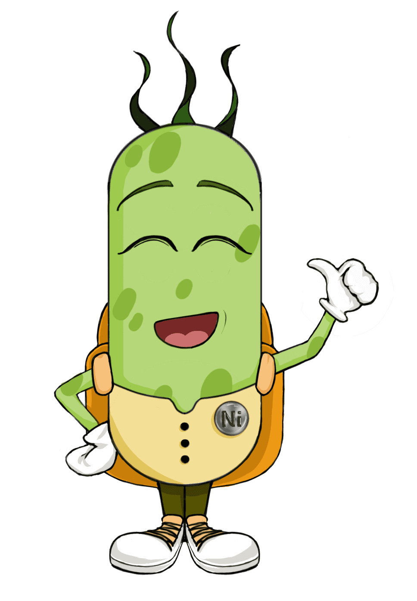

智慧星球
欢迎来到智慧星球！ 探索科学的奇妙世界，成为知识达人！
在遥远的流水星球上，几座化工厂的出现严重破坏了那里的生态环境，河流中充满了有害的重金属。 为了拯救环境，小细菌希望能找到能够对付重金属的“武器”——
蛋白质
， 把它们组装到自己的身体上，让重金属成为自己的“食物”。快来帮助小细菌吧！
在智慧星球，你将和小细菌一道，踏上一次充满乐趣的科学冒险之旅。 选择一个星球，开始你的冒险吧！（建议从左到右依次游玩哦！）
基因星球
智能星球
流水星球
